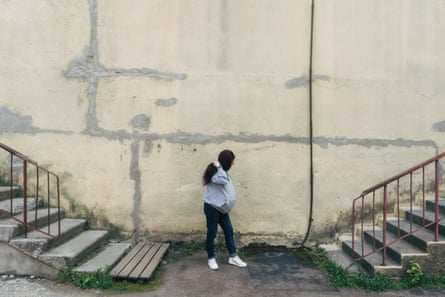
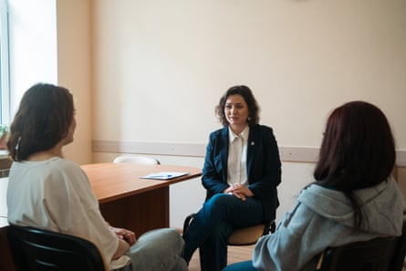
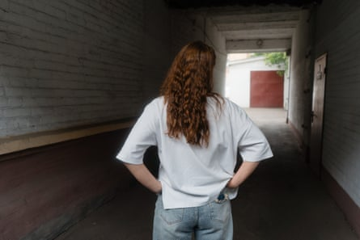

When her husband went off to help defend Ukraine against Russia’s invasion in 2022 , Yulia stayed at home with their toddler. She describes being overcome by a feeling of “numbness”.
“I’d been left alone with a small child. The worst thing for her was the thought that her father had left her and would never come back. The worst time was when she blocked her father when he tried to call.
“It took several months to get a connection again. I’m glad my husband didn’t give up.”
Amid a multitude of strains on life in Ukraine after three long years of war, Yulia’s family have managed to survive the pressures, helped by a group that offers war-damaged families supportive counselling.
Others have not been so lucky. While there are no official figures, anecdotal evidence points to a growing number of relationship stresses and families that have broken up under the pressures of war. From absence when wives and children have fled abroad, to the enforced separation when service at the front means men might only get home for a short period of leave once a year, there are a variety of factors driving relationship stress.
Yulia, who was overcome by a feeling of ‘numbness’ when her husband left her and their child to help defend Ukraine
Research from other countries , including by King’s College London , suggests that in families where one member deploys for 12 months in a three-year period – considerably less than is usual in the Ukrainian military since the Russian invasion – relationship issues are 8% more prevalent than in families where soldiers deploy for shorter periods.
How partners adapt and change to new circumstances, whether at home or on the frontline, can also test the closest of bonds.
“It’s really a sensitive issue,” says Natalia Umerenkova, a psychologist at Ukraine’s Institute of Social and Political Psychology who is involved in running the counselling sessions that Yulia attended.
“One of the main things is fatigue. The war in Ukraine has been going on for more than 10 years, including more than three years of all-out war.
Psychologist Natalia Umerenkova with Marina and Yulia in Kyiv
“People are exhausted. We have a hotline for families who have members in the military and we see requests connected to relationships increasing. It’s not only wives but also men in the military calling, asking for help because they need help with the feeling that their relationship might be ending,” she says.
“Everything is different in each family. But there are three broad categories. If things were bad before, the war is a catalyst and things will be worse. Then there are the families who were close and know how to deal with the experience, how to communicate and have the same values.
“Between those two are the families where there are differences in outlook, and some trust issues. The war can bring them together or break them up. But there’s a feeling that both of them have changed.
“When you don’t have enough strength to deal with issues that appear, to talk about them, then it becomes a vicious circle.”
For men, the immersion in a military culture can create emotional separation from home.
“It’s like a closed male club, where certain initiations take place,” says one woman who recently separated from her partner. “They are surviving dangerous tasks. The men are physically together most of the time. They become emotionally closer to them than their partner because of the different shared experiences.
“And it takes a lot of empathy from the soldier who’s dealing with life and death issues to empathise with the issues his partner is dealing with in civilian life.”
The war, she says, has tilted the balance in Ukraine society’s gender politics. “There is more of a tendency to excuse men’s behaviour. It’s considered bad if people feel you are talking shit about your partner.”

Yulia, whose family have managed to survive the pressures of separation helped by supportive counselling
The issue of trust can be one of uncertainty, and difficulty in communication, corroded by uncomfortable truths: including the awareness that some soldiers visit sex workers, a reality much in evidence in areas adjoining the immediate frontline.
“It’s normal when in combat conditions,” says Umerenkova. “Your brain switches to survival mode to try to cut off emotions not connected to war.
“You put all emotions into your survival and the survival of the group. Lots of wives say that communication with their husband changes because they are communicating the same way as in their military group. Short unemotional communications. And the wives are asking: ‘Are we OK?’ They see it as rejection.”
Mutual misunderstanding compounding a sense of doubt is a common theme.
“I came to this group,” says Yulia, “because I felt I had no choice. I could go crazy or learn to find help from other people. I was worried something was wrong with me.”
For Marina, 41, the stress responses became physical over the separation from her husband of 22 years, a combat medic who was injured during the conflict.
Marina, who after her therapy sessions, says: ‘One of the things I understand now is the right time to talk about certain things’
“We have never been apart for more than a month. We worked to find ways to communicate but it was really hard for me to understand why he wasn’t here. It was like losing a limb and I had a physical reaction – rashes – when he left.
“I couldn’t understand if my emotional reactions were correct. In the beginning I thought the war would last one year at most. Then life will be the same but it’s not.
“2022 was a bad year for me,” she adds. “I started therapy and then I heard about the support group. I found it hard to stay in touch with people whose life didn’t change as much and didn’t have the huge stress of a husband in the military.
“One of the things I understand now is the right time to talk about certain things. Because my husband is a medic it’s sometimes hard for him to talk about a lot of things, including the loss of colleagues. Now we have special words when he doesn’t want to say something. Now I understand.”
Umerenkova says the necessary level of social support is lacking in Ukraine. “Everyone needs some support but its not easy to get with so many people in the army. As a society we need it, and it’s important to start to talk about this now while the men are still in the army – because after the war, our veterans will need to deal with it.”